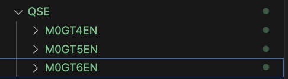
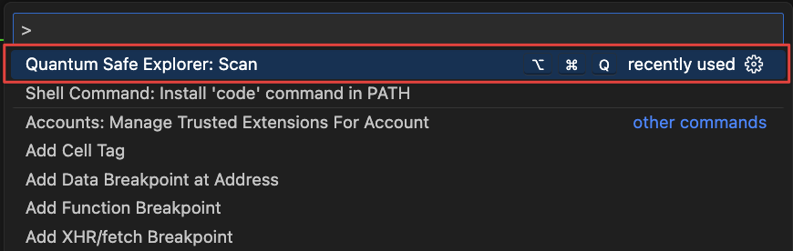
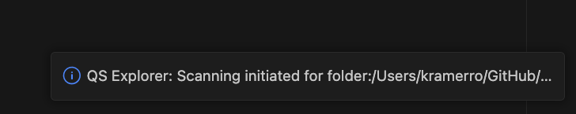
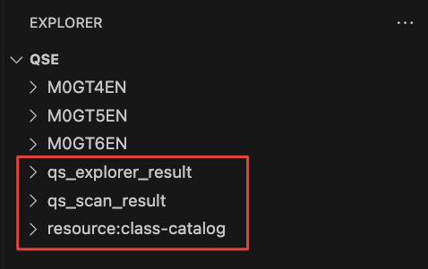
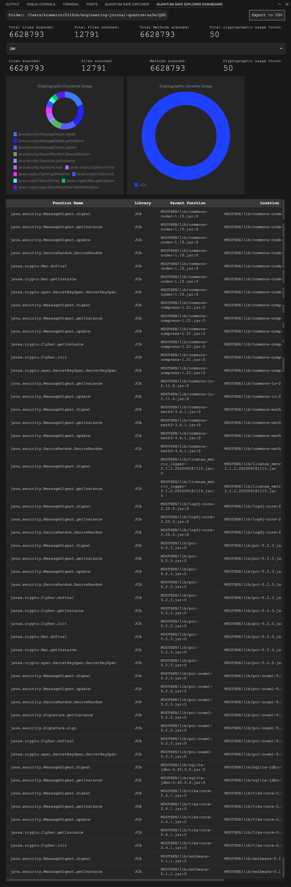
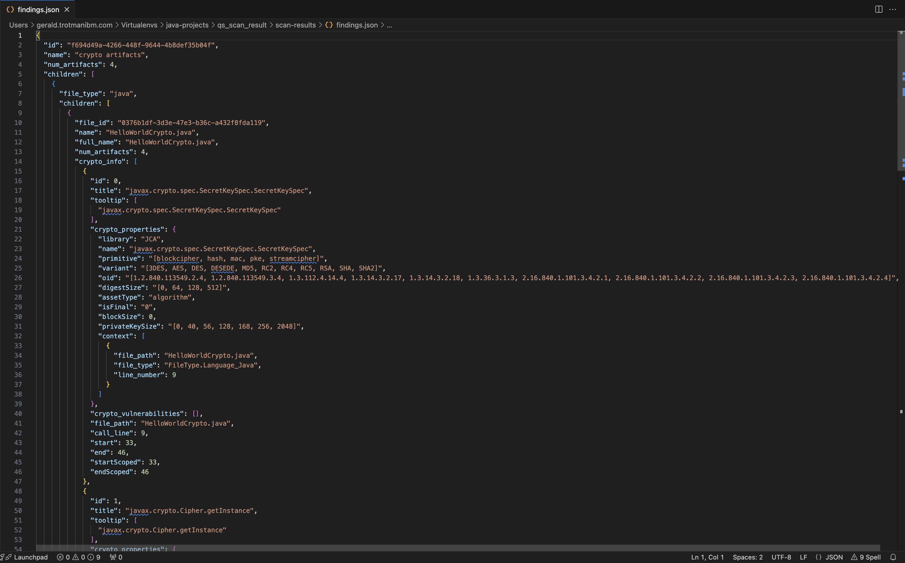
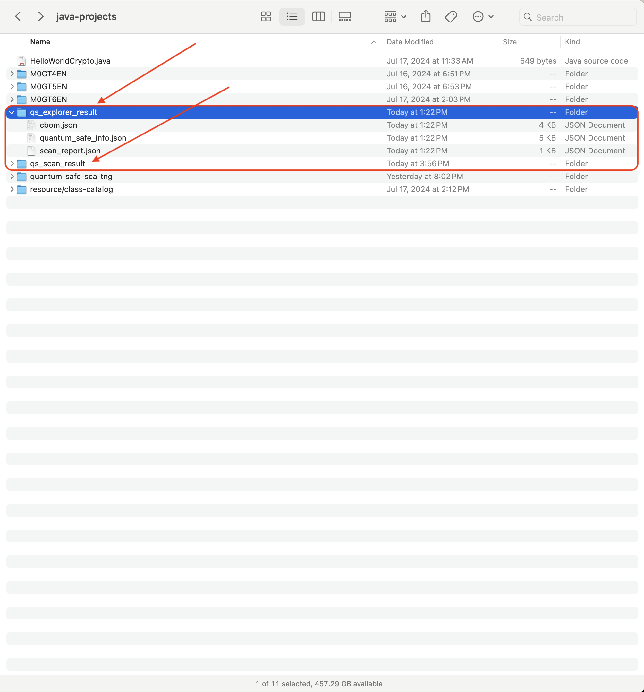
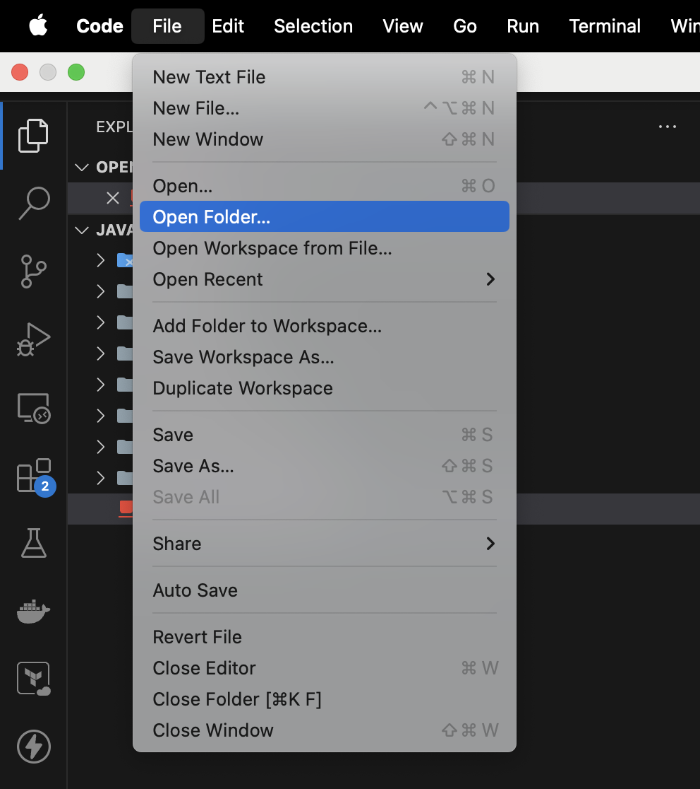
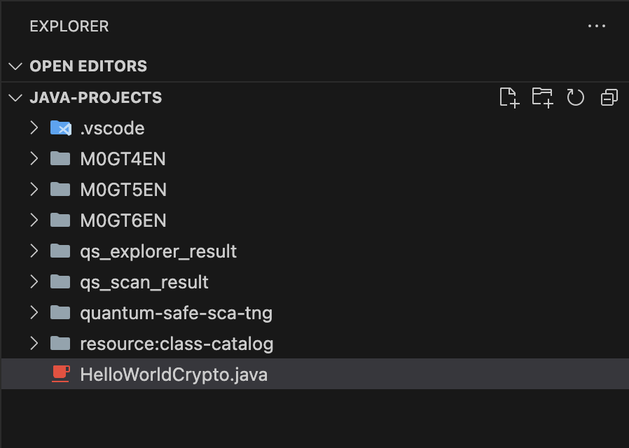

Scanning
Scanning in VSCode
Kicking off the scan and seeing results
Let’s scan our sample repo for vulnerabilities!
In our sample repo, we have a folder called sample_files with example files written in Python, C#, C++, Go, and Java
cd qse-samples
cd sample_files
code .
Open that directory in VSCode.
On VSCode, open a new terminal in the code window. This can be done with the following key combo: Ctrl-Shift-Backtick(`)

In Windows this will open a Powershell terminal
Press Ctrl-Shift-P to open the Command Palette and search for Quantum Safe Explorer.
There are two scanning options available in IBM Quantum Safe Explorer 2.2.5. They are:
- Scan API discovery: This option will scan all the API discovery supported languages
- Scan Cryptography analysis: This option will scan all the Cryptography analysis supported languages
For a more detailed list on the features and differences of these scans, see IBM Documentation here
Cryptography analysis is currently only available on Java. See here for up-to-date list of languages and libraries supported

First, let’s click on “Scan API discovery”
The following notification should pop up

Let it scan until it completes.
When the scan completes, you should see the following directories show up in the Explorer window of VSCode:
qs_explorer_result and qs_scan_result

We should now see the EXPLORER SCAN RESULTS tab populated with some graphs and charts.

Executing the IBM Quantum Safe Explorer CLI
Make sure that Git Bash is installed and use a Git Bash terminal window for the instructions below.
Change directory to M0Z1BEN\CLI or where ever you extracted the CLI files and run the following command:
/usr/bin/sed -i 's/^RSP_LICENSE_ACCEPTED=.*/RSP_LICENSE_ACCEPTED=true/' LicenseAcceptance.configTo make sure you have the correct permissions to run the shell script first run:
chmod +x cli.shNext, run the following help command
./cli.sh -h The run will also point out that you have already accepted the licensing agreement.
Before you officially perform the script run, it is helpful to know the list of required/optional parameters:


You can also find a link to this parameter list in the documentation here
You initiate a scan using the required program package path. The command can be run for single or multiple languages. Here is an example:
API Discovery Scan:
./cli.sh -i <package-path> -l .cs
Cryptography Analysis Scan:
./cli.sh -i <package-path> -l .java -cf <class-path> -da
If you are scanning more than one language, then the command needs to be run in double quotation marks. Use the Help command by running ./cli.sh -h for more details on the various parameters.
Here is an example of a completed scan (API discovery) with a specified program package path:
itzuser@itz-gahknc-help MINGW64 ~/Desktop/QSE/M0Z1BEN/CLI
$ ./cli.sh -i "C:/Users/itzuser/desktop/qse_samples/sample_files" -l .py
Swidtag file already present.
before settings file
License Agreement have been already completed.
Using Heap Size: 24561 MB
[2026-02-25 09:35:50,757] [ main] [ INFO] [com.ibm.quantumsafe.lang.driver.CryptoCli] - Path to scan : C:/Users/itzuser/Desktop/qse_samples/sample_files
[2026-02-25 09:35:50,797] [ main] [ INFO] [com.ibm.quantumsafe.lang.driver.CryptoCli] - Application Version : App Version : 2.2.5.0 Build Version : 202512.00077 -- Generated On Wed Feb 25 09:35:50 PST 2026
[2026-02-25 09:35:50,869] [ main] [ INFO] [com.ibm.quantumsafe.lang.driver.CryptoCli] - Processing Language - .py
[2026-02-25 09:35:51,045] [2-thread-1] [ INFO] [com.ibm.quantumsafe.integrator.impl.IntegratorAPIImpl] - Running Task: Getting Application name
[2026-02-25 09:35:51,047] [2-thread-2] [ INFO] [com.ibm.quantumsafe.integrator.impl.IntegratorAPIImpl] - Running Task: Execution Started
[2026-02-25 09:35:51,049] [2-thread-2] [ INFO] [com.ibm.quantumsafe.analytics.utility.DeleteTask] - Cleaning up output directory
[2026-02-25 09:35:51,051] [2-thread-1] [ INFO] [com.ibm.quantumsafe.integrator.impl.IntegratorAPIImpl] - Scanning initiated for the application :
[2026-02-25 09:35:51,053] [2-thread-2] [ INFO] [com.ibm.quantumsafe.analytics.utility.DeleteTask] - Cleaning up output directory completed.
[2026-02-25 09:35:51,060] [2-thread-2] [ INFO] [com.ibm.quantumsafe.integrator.impl.IntegratorAPIImpl] - **********************************
[2026-02-25 09:35:51,060] [2-thread-2] [ INFO] [com.ibm.quantumsafe.integrator.impl.IntegratorAPIImpl] - '.py' Scan Initiated !!!
[2026-02-25 09:35:51,061] [2-thread-2] [ INFO] [com.ibm.quantumsafe.integrator.impl.IntegratorAPIImpl] -
[2026-02-25 09:35:51,095] [2-thread-2] [ INFO] [com.ibm.quantumsafe.discovery.Orchestrator] - App Version : 2.2.5.0 Build Version : 202512.00077 -- Generated On Wed Feb 25 09:35:51 PST 2026
[2026-02-25 09:35:51,097] [2-thread-2] [ INFO] [com.ibm.quantumsafe.discovery.Orchestrator] -
++++++++++++++++++++++++++++++++++++++++++++++++++++++++++++++++++++++++++++++++++++++++++++++++++++
+ PARAMETERS SENT TO DISCOVERY
++++++++++++++++++++++++++++++++++++++++++++++++++++++++++++++++++++++++++++++++++++++++++++++++++++
+ app-name :
+ app-version :
+ isDebugEnabled : false
+ parameter-execution-mode : multi-language-selection
+ parameter-language-processing-list : py
+ parameter-path-exclusion-filter :
+ parameter-path-filter :
+ parameter-scan-type :
+ parameter-source-filter :
+ parameter-transaction-id : c8fe2b21fda5452ab865b997953be7ef
+ project-output-dir : C:/Users/itzuser/Desktop/qse_samples/sample_files/qs_scan_result
+ repository_id :
+ repository_url :
+ root : C:/Users/itzuser/Desktop/qse_samples/sample_files
++++++++++++++++++++++++++++++++++++++++++++++++++++++++++++++++++++++++++++++++++++++++++++++++++++
[2026-02-25 09:35:51,099] [2-thread-2] [ INFO] [com.ibm.quantumsafe.discovery.Orchestrator] - Getting file lists for py
[2026-02-25 09:35:51,105] [2-thread-2] [ INFO] [com.ibm.quantumsafe.discovery.Orchestrator] - Time taken to list files: 7 milliseconds
[2026-02-25 09:35:51,105] [2-thread-2] [ INFO] [com.ibm.quantumsafe.discovery.Orchestrator] - Parsing files and generating metrics
[2026-02-25 09:35:51,114] [2-thread-2] [ INFO] [com.ibm.quantumsafe.discovery.reader.PyFileProcessor] - Number of crypto relevant files is 0 out of total 0 files.
[2026-02-25 09:35:51,212] [2-thread-2] [ INFO] [com.ibm.quantumsafe.discovery.Orchestrator] - Time taken to parse files: 107 milliseconds
[2026-02-25 09:35:51,212] [2-thread-2] [ INFO] [com.ibm.quantumsafe.discovery.Orchestrator] - Transformation started...
[2026-02-25 09:35:51,227] [2-thread-2] [ INFO] [com.ibm.quantumsafe.discovery.Orchestrator] - Time taken to transform the parsed trees: 15 milliseconds
WARNING: A restricted method in java.lang.System has been called
WARNING: java.lang.System::load has been called by org.sqlite.SQLiteJDBCLoader in an unnamed module (file:/C:/Users/itzuser/Desktop/QSE/M0Z1BEN/CLI/lib/sqlite-jdbc-3.50.3.0.jar)
WARNING: Use --enable-native-access=ALL-UNNAMED to avoid a warning for callers in this module
WARNING: Restricted methods will be blocked in a future release unless native access is enabled
[2026-02-25 09:35:51,659] [2-thread-2] [ INFO] [com.ibm.quantumsafe.discovery.Orchestrator] - Time taken to generate crypto findings: 432 milliseconds
[2026-02-25 09:35:51,968] [2-thread-2] [ INFO] [com.ibm.quantumsafe.discovery.Orchestrator] - Time taken to generate CBOM: 0 milliseconds
[2026-02-25 09:35:51,988] [2-thread-2] [ INFO] [com.ibm.quantumsafe.discovery.Orchestrator] - Time taken to generate dashboard: 329 milliseconds
[2026-02-25 09:35:51,989] [2-thread-2] [ INFO] [com.ibm.quantumsafe.discovery.Orchestrator] - Clean up activity is done
[2026-02-25 09:35:51,990] [2-thread-2] [ INFO] [com.ibm.quantumsafe.discovery.Orchestrator] - Total time to taken to scan: 911 milliseconds
[2026-02-25 09:35:51,991] [2-thread-2] [ INFO] [com.ibm.quantumsafe.integrator.impl.IntegratorAPIImpl] -
[2026-02-25 09:35:51,992] [2-thread-2] [ INFO] [com.ibm.quantumsafe.integrator.impl.IntegratorAPIImpl] - Scan Completed !!!
[2026-02-25 09:35:52,544] [ main] [ INFO] [com.ibm.quantumsafe.lang.driver.ProductLicenseServiceUtils] - Number of lines scanned during current scan : 0
[2026-02-25 09:35:52,549] [ main] [ INFO] [com.ibm.quantumsafe.lang.driver.ProductLicenseServiceUtils] - Cummulative number of lines scanned including the last scan : 8375885When scanning large applications (e.g., more than 500,000 lines of code) on macOS systems, IBM Quantum Safe Explorer consumes a large amount of disk space. It is advised to archive and clear the results folder and to reboot the machine before initiating a scan on another application.
Accessing the IBM Quantum Safe Explorer CLI scan results
The results of your scan are written to different folders depending on whether you ran an API Discovery Scan or a Cryptographic Analysis Scan
The scan results for API Discovery languages can be found in the following files:
- quantum_safe_api_discovery_cbom.json - A single CBOM file is generated after the API Discovery Scan for all supported languages, except for Java. For Java, a CBOM cannot be generated at this stage because the required variant details are only available after the Analysis Scan.
- quantum_safe_api_discovery_crypto_inventory.json - Inventory of all cryptographic APIs discovered during the API Discovery Scan, including file names and locations.
- quantum_safe_api_discovery_findings.json - Detailed findings from the API Discovery Scan are available for all supported languages, except for Java API Discovery Scan results.
- quantum_safe_api_discovery_report.json - Detailed metrics information, including the number of files, line counts, and related data.
The scan results for Cryptographic analysis language can be found in the following files:
- quantum_safe_cryptography_analysis_cbom.json - The CBOM file is generated after the Cryptographic Analysis Scan for all supported languages (currently limited to Java).
- quantum_safe_cryptography_analysis_findings_
.json - Detailed findings from the Cryptographic Analysis Scan, including vulnerabilities, cryptographic properties, compliance status, and related metrics, are available for the supported languages (currently limited to Java). - quantum_safe_cryptography_analysis_issue_summary.json - Provide details about any missing dependencies or class files specified in the class path during Cryptographic Analysis Scan. This information helps identify potential causes of scan failures or missing artifacts.
These files are quite verbose. Here’s a snippet of the result:

Viewing the CLI scan results in the IBM Quantum Safe Explorer Visual Studio Code Extension
There are two ways to view the CLI output on Visual Studio Code with the IBM Quantum Safe™ Explorer Visual Studio Code extension:
- Opening the scanned root folder of the project.
- Opening the scan results subfolder (qs_explorer_result) directly.
Opening the scanned folder
When you execute a scan, a qs_explorer_result folder is generated along with the qs_scan_result folder.

To view the results, you need to have the Visual Studio Code extension installed on your system.
Navigate to the File menu drop down, select the Open Folder to locate your /<package-path> folder:

Once you have found your /<package-path> simply open it to populate the project in the Visual Studio Code Explorer view:

The EXPLORER SCAN RESULTS tab is open by default. The scan results are displayed:
Opening the scan results subfolder (qs_explorer_result) directly
In your local drive, locate the qs_explorer_result folder. Then right click the qs_explorer_result folder, hover over “Open with” and select Visual Studio Code.
Click the EXPLORER SCAN RESULTS tab to view the scan results. Under the cryptographic results section, select the language to view the scan results.
In this option, only the scan results will appear. The code cannot be opened in the editor panel.